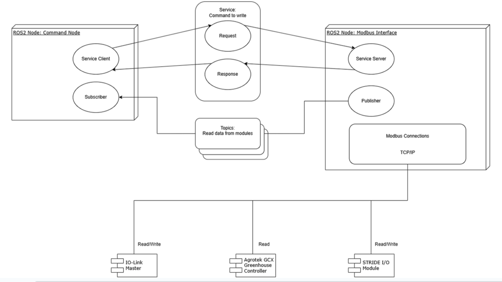
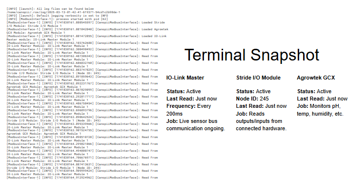

System architecture showing ROS2 software components communicating with Modbus-connected hardware for data exchange over a network.
Remote Test Rig Demo
Terminal Output Overview

This system connects with various devices that help monitor and control the greenhouse. The background system log shows that everything is properly connected, active, and regularly checked for updates.